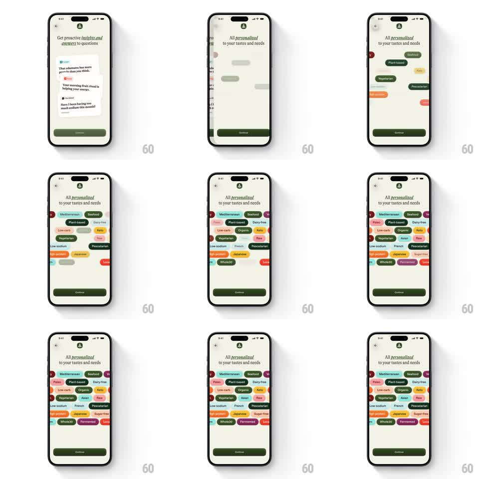

Media
Frame-by-frame

Rebuild this interaction 1:1: Alma's taste personalization screen - under the "All personalized to your tastes and needs" headline, a dense cloud of colorful dietary pills (Mediterranean, Seafood, Keto, Plant-based, Dairy-free, Vegetarian...) scales in with a staggered springy cascade until the field is full.

Rebuild this interaction 1:1: Alma's taste personalization screen - under the "All personalized to your tastes and needs" headline, a dense cloud of colorful dietary pills (Mediterranean, Seafood, Keto, Plant-based, Dairy-free, Vegetarian...) scales in with a staggered springy cascade until the field is full. ## Integration Integration: stack-agnostic spec - springs given as stiffness/damping, timed motions as duration + curve; map every value to your framework and animation library of choice. ## Scene Cream onboarding screen: back chevron, "All personalized to your tastes and needs" serif headline (personalized in italic), then a wide field of pill tags in many colors (green, orange, yellow, pink, teal, red, purple...) with white or dark text, arranged in offset rows filling the middle band, and a dark Continue button at the bottom. ## Motion spec Pattern: staggered springy pill cascade, ~1.8s. - Entrance: pills pop in one by one (scale 0 -> 1.08 -> 1, spring ~400/18, ~40ms apart) in a loose diagonal sweep from top-left to bottom-right. - Settle: each pill lands with a single soft bounce - no oscillation beyond one overshoot. - Hold: once full, the cloud is static; the Continue button fades in last (200ms). - Optional select: tapping a pill scales it 0.94 -> 1 with a highlight ring (150ms). ## Calibration - The stagger order reads as a wave, not random popping. - Pills keep their offsets - rows are deliberately uneven, never justified into a grid. ## Reduced motion All pills fade in together (250ms) at final scale. ## Don't miss - Roughly 20+ pills; the density is the visual point. - Pill colors pair with their label (green Vegetarian, yellow Keto, red Local...) - keep the variety.